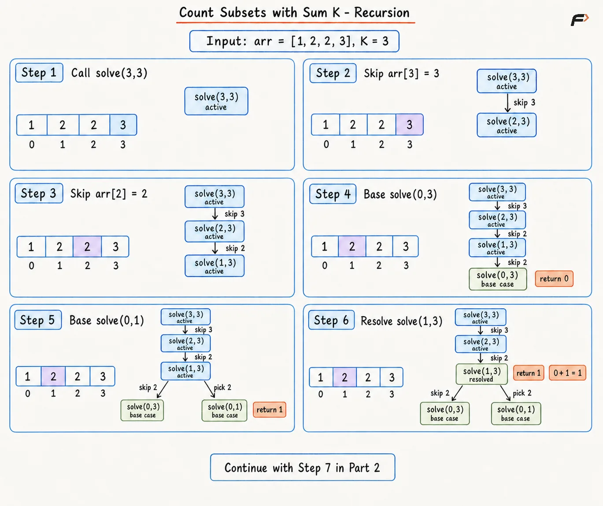
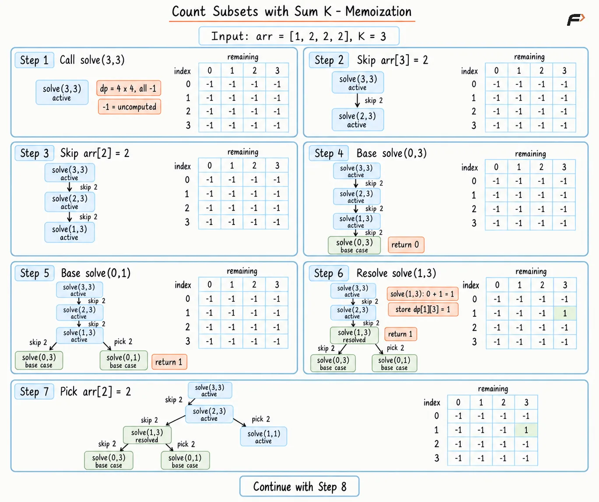
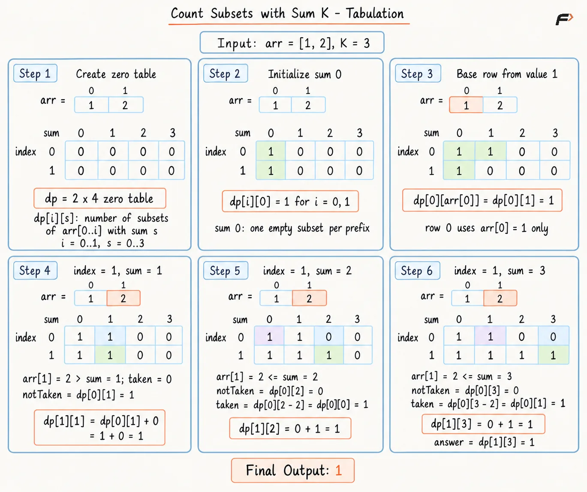
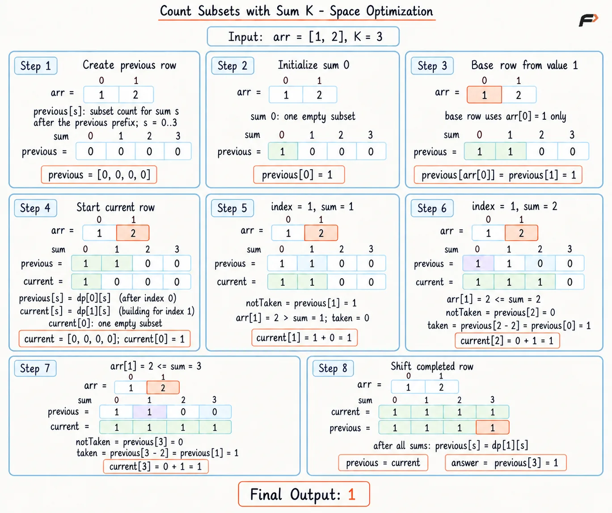

Count Subsets with Sum K Using Dynamic Programming
An array arr containing positive integers and a positive integer K are given. Select any collection of array positions, with every position used at most once, and count the selections having total sum K.
Equal values at different positions remain separate choices. Return the count modulo 109 + 7.
Example 1
Input: arr = [2, 3, 5, 16, 8, 10], K = 10
Output: 3
Explanation: Valid subsets are [2, 3, 5], [2, 8], and [10].
Example 2
Input: arr = [2, 2, 2, 2], K = 4
Output: 6
Explanation: Any pair of positions forms sum 4, and four positions contain 6 different pairs.
Recursion
Every array position offers two choices: skip the current value or pick it. Skipping keeps the remaining sum unchanged, while picking subtracts the current value from the remaining sum. Adding the counts from both choices considers every possible subset without overlap.
The state solve(index, remaining) represents the number of subsets that can be formed using elements from positions 0 through index with the required sum remaining. The initial call uses (N - 1, K) because the complete array and target are available at the beginning.
Algorithm
Start with
solve(N - 1, K)because the complete array must be considered for forming the targetK.Return
1whenremaining == 0because the current selection has formed one valid subset.At
index == 0, comparearr[0]withremainingbecause only the first element remains available.Explore the skip branch with
(index - 1, remaining)because excluding the current value leaves the required sum unchanged.Explore the pick branch only when
arr[index] <= remainingbecause positive values cannot be picked if they exceed the remaining sum.Add the skip and pick counts because the two branches represent disjoint choices of whether to include the current element.
Apply modulo
109+ 7during every merge to keep the count within the required modular range.
Dry Run

Diagram 1
Solution
#include <bits/stdc++.h>
using namespace std;
class Solution {
private:
int modulo = 1000000007;
// Counts valid subsets inside one array prefix.
int solve(
int index,
int remaining,
vector<int>& arr
) {
// A zero remainder forms one completed subset.
if (remaining == 0) {
return 1;
}
// Only the first value remains at index zero.
if (index == 0) {
return arr[0] == remaining ? 1 : 0;
}
// Skipping preserves the remaining target.
int notTaken = solve(index - 1, remaining, arr);
int taken = 0;
// Picking is valid only within the remainder.
if (arr[index] <= remaining) {
// Picking reduces the sum still required.
taken = solve(
index - 1,
remaining - arr[index],
arr
);
}
// Disjoint pick and skip counts are added.
return (notTaken + taken) % modulo;
}
public:
// Returns the subset count for the target.
int countSubsets(vector<int>& arr, int target) {
int n = arr.size();
// The full prefix starts with the full target.
return solve(n - 1, target, arr);
}
};
// Driver code
int main() {
vector<int> arr = {2, 3, 5, 16, 8, 10};
int target = 10;
Solution obj;
cout << obj.countSubsets(arr, target);
return 0;
}Complexity Analysis
Time Complexity: O(2N), where N is the number of array elements, because every array position can create a pick branch and a skip branch, forming a binary recursion tree.
Space Complexity: O(N), because the deepest recursive path can contain at most one call for each array position.
Note: Direct recursion may fail for large input values. Repeated subproblems create exponential work, so an online judge may report Time Limit Exceeded.
Memoization
Different decision paths can reach the same pair (index, remaining). Without memoization, the same state repeats its pick-or-skip work even though it always produces the same count. A two-dimensional dp array stores the answer for each state, avoiding this repeated work.
Memoization keeps the same recursive states and transitions. When a previously calculated state is reached again, its stored count is returned immediately, so each state performs its branch calculations only once.
Algorithm
Start with
solve(N - 1, K)because memoization preserves the same initial state as recursion.Create
dpwithNrows andK + 1columns becauseindexandremaininguniquely define each cached state.Fill
dpwith-1because the marker distinguishes uncalculated states from valid counts, including0.Return
1whenremaining == 0because the current selection has formed one valid subset.Handle the
index == 0case by comparingarr[0]withremainingbecause only the first element remains available.Return
dp[index][remaining]when a cached value exists because the same state always produces the same count.Compute the skip and valid pick branches using the same recurrence as recursion because memoization does not change the available choices.
Store the modular sum of both branches in
dp[index][remaining]before returning it so future calls can reuse the completed state.
Dry Run

Diagram 1
Solution
#include <bits/stdc++.h>
using namespace std;
class Solution {
private:
int modulo = 1000000007;
// Counts subsets and caches repeated states.
int solve(
int index,
int remaining,
vector<int>& arr,
vector<vector<int>>& dp
) {
// A zero remainder forms one completed subset.
if (remaining == 0) {
return 1;
}
// Only the first value remains at index zero.
if (index == 0) {
return arr[0] == remaining ? 1 : 0;
}
// A stored state avoids repeated branch work.
if (dp[index][remaining] != -1) {
return dp[index][remaining];
}
// Skipping preserves the remaining target.
int notTaken = solve(
index - 1,
remaining,
arr,
dp
);
int taken = 0;
// Picking is valid only within the remainder.
if (arr[index] <= remaining) {
// Picking reduces the sum still required.
taken = solve(
index - 1,
remaining - arr[index],
arr,
dp
);
}
// The cache stores the modular branch sum.
dp[index][remaining] = (
notTaken + taken
) % modulo;
// The stored count represents the current state.
return dp[index][remaining];
}
public:
// Returns the subset count for the target.
int countSubsets(vector<int>& arr, int target) {
int n = arr.size();
// Negative entries mark uncalculated states.
vector<vector<int>> dp(
n,
vector<int>(target + 1, -1)
);
// The full prefix starts with the full target.
return solve(n - 1, target, arr, dp);
}
};
// Driver code
int main() {
vector<int> arr = {2, 3, 5, 16, 8, 10};
int target = 10;
Solution obj;
cout << obj.countSubsets(arr, target);
return 0;
}Complexity Analysis
Time Complexity: O(N × K), where N is the number of array elements and K is the target sum, because at most N × (K + 1) states are evaluated, with each state performing constant-time branch and merge work.
Space Complexity: O(N × K) + O(N), because the dp table stores all index-and-sum states, while the recursion stack can contain at most N calls.
Tabulation
Memoization solves states only after recursive requests arrive. Tabulation fills the same prefix-and-sum states directly, beginning with the smallest prefix. Every table entry still combines a skipped current value with a picked current value.
Row index - 1 already contains all counts needed for row index. Left-to-right row construction removes the recursion stack while keeping the complete two-dimensional state table.
Algorithm
Create a
dptable withnrows andK + 1columns because every cell represents one prefix and one target sum.Set
dp[index][0] = 1for every row because the empty selection forms sum0from any positive-value prefix.Set
dp[0][arr[0]] = 1when the first value fits because a single first position forms exactly one positive sum.Process rows from index
1onward because rowindex - 1must be complete before rowindex.Read
dp[index - 1][sum]for the skip count because exclusion leaves the requested sum unchanged.Read
dp[index - 1][sum - arr[index]]only after the current value fits because picking requires a nonnegative earlier sum.Store the modular sum of pick and skip counts because the branches partition every subset represented by the cell.
Return
dp[n - 1][K]because the final row and target column represent the complete problem.
Dry Run

count-subsets-sum-k-tabulation-indices-fixed.png
Solution
#include <bits/stdc++.h>
using namespace std;
class Solution {
public:
// Returns the subset count through tabulation.
int countSubsets(vector<int>& arr, int target) {
int n = arr.size();
int modulo = 1000000007;
// Every cell stores one prefix-and-sum count.
vector<vector<int>> dp(
n,
vector<int>(target + 1, 0)
);
// Every positive-value prefix forms sum zero once.
for (int index = 0; index < n; index++) {
dp[index][0] = 1;
}
// The first value can form one positive sum.
if (arr[0] <= target) {
dp[0][arr[0]] = 1;
}
// Later rows use only the completed earlier row.
for (int index = 1; index < n; index++) {
// Positive sums preserve the zero-sum base.
for (int sum = 1; sum <= target; sum++) {
// Skipping preserves the requested sum.
int notTaken = dp[index - 1][sum];
int taken = 0;
// Picking needs a nonnegative earlier sum.
if (arr[index] <= sum) {
// Earlier counts supply the reduced sum.
taken = dp[
index - 1
][sum - arr[index]];
}
// Current count merges disjoint choices.
dp[index][sum] = (
notTaken + taken
) % modulo;
}
}
// The last row covers the complete array.
return dp[n - 1][target];
}
};
// Driver code
int main() {
vector<int> arr = {2, 3, 5, 16, 8, 10};
int target = 10;
Solution obj;
cout << obj.countSubsets(arr, target);
return 0;
}Complexity Analysis
Time Complexity: O(N × K), where N is the number of array elements and K is the target sum, because each of the N rows processes all K + 1 possible sums once with constant transition work.
Space Complexity: O(N × K), because the two-dimensional dp table stores one count for every prefix-and-sum state, and no recursion stack is used.
Space Optimization
Every tabulation cell reads values only from the preceding row. Older rows never affect a later transition, so two one-dimensional arrays can replace the full table.
Array previous stores the completed earlier row, and array current stores counts for the active array position. After all sums in current are calculated, assigning current to previous preserves the required row for the next position.
Algorithm
Create
previouswithK + 1entries because a single row contains every remaining sum needed by the next position.Set
previous[0] = 1and initialize the first value because the first row must match the tabulation base.Build a fresh
currentrow for every later position because partially updated counts must never replace earlier-row values.Set
current[0] = 1because the empty selection remains the only zero-sum subset for positive values.Read skip and valid pick counts from
previousbecause both transition terms belong to the completed earlier row.Calculate
current[sum]from the modular branch sum because the active row must preserve the same tabulation recurrence.Shift
currentintopreviousonly after every sum is complete because early replacement would mix two different rows.Return
previous[K]because the final shift stores counts for the complete array.
Dry Run

count-subsets-sum-k-space-optimization-indices-fixed.png
Solution
#include <bits/stdc++.h>
using namespace std;
class Solution {
public:
// Returns the count with two rolling rows.
int countSubsets(vector<int>& arr, int target) {
int n = arr.size();
int modulo = 1000000007;
// The previous row stores all earlier counts.
vector<int> previous(target + 1, 0);
// The empty selection forms sum zero once.
previous[0] = 1;
// The first value can form one positive sum.
if (arr[0] <= target) {
previous[arr[0]] = 1;
}
// Every later position builds one fresh row.
for (int index = 1; index < n; index++) {
vector<int> current(target + 1, 0);
// Positive values preserve one zero-sum choice.
current[0] = 1;
// Every positive sum uses the earlier row.
for (int sum = 1; sum <= target; sum++) {
// Skipping preserves the requested sum.
int notTaken = previous[sum];
int taken = 0;
// Picking needs a nonnegative earlier sum.
if (arr[index] <= sum) {
// Earlier counts supply the reduced sum.
taken = previous[sum - arr[index]];
}
// Current sum combines skip and pick counts.
current[sum] = (
notTaken + taken
) % modulo;
}
// Shift current into previous for the next row.
previous = current;
}
// The final rolling row covers the full array.
return previous[target];
}
};
// Driver code
int main() {
vector<int> arr = {2, 3, 5, 16, 8, 10};
int target = 10;
Solution obj;
cout << obj.countSubsets(arr, target);
return 0;
}Complexity Analysis
Time Complexity: O(N × K), where N is the number of array elements and K is the target sum, because every array value processes all K + 1 possible sums once with constant transition work.
Space Complexity: O(K), because only the previous and current rows of length K + 1 are stored, while older rows are discarded.
Interview follow-up Questions
Yes. Array positions define choices, so arr = [2, 2, 2, 2] and K = 4 produce 6 position pairs.